続日本初？
2009/8/20に「日本初？」というタイトルで、1975〜77年に３回開催された「ヘッドフォン・フェスティバル」についての文章を公開しました。今回は、その時点では不明だったことのいくつかが、その後判明したので、その補足を行います。
1.開催場所・日時について
前回の文章公開時点では、第1回及び第2回の開催場所については、「都立産業会館」としか判らず、当時あった台東館（現 都立産業貿易センター・台東館）と大手町館のどちらで開催されたか不明でした。しかしその後調べた結果、第2回については「大手町館」で開催されたことが、複数の雑誌に掲載されていました。
この「大手町館」は30年以上前に閉館されていますが、国会図書館に関連資料が数点保管されており、それにより第1回、第2回とも「大手町館」の6階で開催されたこと、及び第1回の開催が1975年の6月5〜7日に開催されたことが判明しました。
＊都立産業会館 大手町館について
1954年10月に、当時まだなかった商用常設展示会場として開設された施設です。場所は千代田区大手町1-2。敷地5765.1�u、延べ床面積16925.9�uの施設で、うち展示会場用スペースは1階から6階まで合計で6429�u（1978年4月当時のデータ）。現在の施設と比較すると全フロア利用で、池袋サンシャインのワールドインポートマート、2フロア分程度の広さでした。利用件数のピークは1958年、稼働日数で1966年でした。ヘッドフォンフェステバルが開催された頃には、小規模な展示会などに使われていたようです。1980年3月に閉館されました。
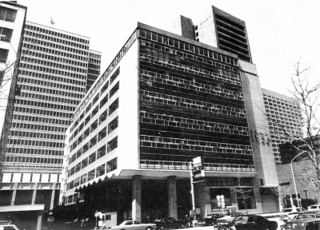
（在りし日の都立産業会館大手町館 現在の大手町ファーストスクエアの向かいにあったようです。）
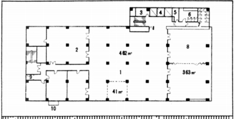
（会場である6階フロア見取り図 メインの展示室が462�u）
会場がわかったので、現在のイベントと比較ができるようになりました。
最近、中野の某店が主催した「春のヘッドフォン祭2010」は中野サンプラザの15階全室で行われました。建物の床面積はわかりませんが、宴会場として貸し出される場所なので、各部屋の面積が公開されています。全室ですと（「エトワールルーム」＝135�u）+（「アクアルーム」＝63�u）+（「フォレストルーム」＝104�u）+（「リーフルーム」＝80�u）＝382�uとなり、展示に使ったロビーの広さを「エトワールルーム」並みと考え、廊下を加えると600�uぐらいといった所でしょうか？
一方「ヘッドフォンフェスティバル」の方は、メイン会場が462�uで、開催中には主催の岡原氏をはじめとした講演会が行われたそうですので、会議室の少なくとも半分を使ったと考えると、640�uぐらいでしょう。「ヘッドフォンフェスティバル」は会場の広さという点では結構大きなイベントだったことがわかります。
中野の某店のイベントは、次回はより広い会場に場所を移して開催されるそうですが、可能ならその広さを、ゆったり視聴できる空間作りに生かしてほしいものです。
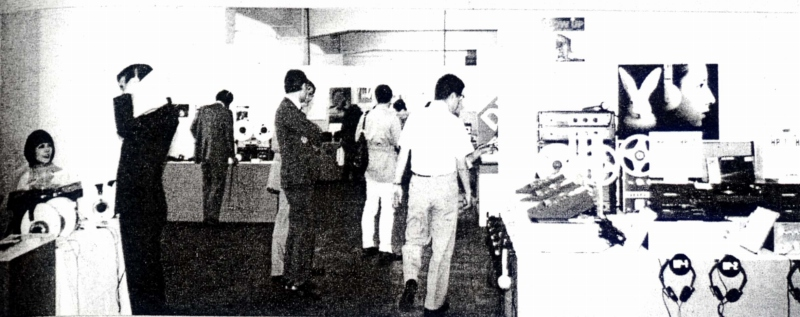
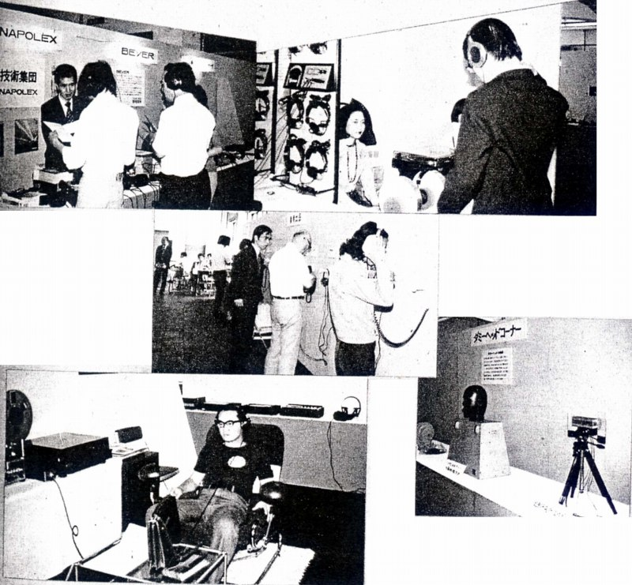
（「電波科学」誌に掲載された第2回の様子）
2.「泉電子工業」（*）について
正体不明だった「泉電子工業」は1970年代前半〜中盤に「SDM」型という独自形式のヘッドフォンを開発していたメーカーであることが判明しました。
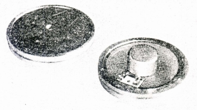
「SDM」型は、コーン型やドーム型ではなく、膜振動型であるという意味では、コンデンサー型やヤマハのオルソダイナミック型、フォステックスのRP型のような動電全面駆動型と同様ですが、全面駆動ではなく、線駆動であることが特長です。
「SDM」はStretched Duralmin Membrane（緊張させたジュラルミンの膜）の頭文字を取ったもので、動電全面駆動型とは違った形で、コンデンサー型の良さとダイナミック型の良さを兼ね備えたヘッドフォンを目指して開発されたようです。
「SDM」型の基本的な構造は次の図のとおりです。
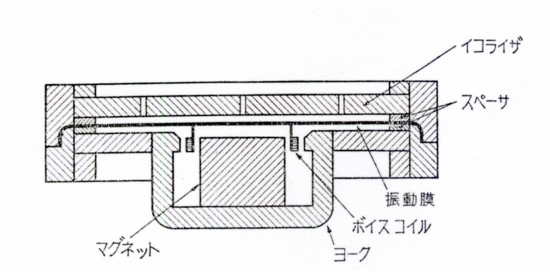
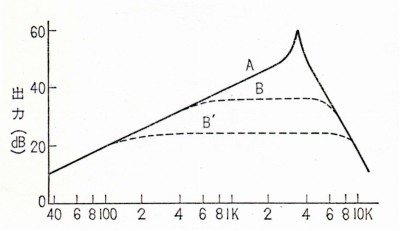
ジュラルミンの薄膜の中心近くにボイスコイルを取付て駆動するのですが、Qが高く、そのままではグラフの「A」のように低い周波数からオクターブ6dBの傾斜で上昇するそうです。しかし膜の近くに板（イコライザー）を取り付け、薄い空気層を設けると、周波数の上昇に比例して強い空気制動がかかり、「B」から「B'」のようにフラットな特性が得られるという原理です。
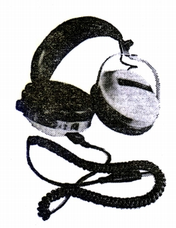 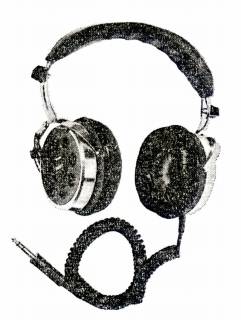
しかし、グラフをみるとわかるのですが、「A」から「B」、「B'」とフラットな帯域を広げようとすると、どうしても感度が低くなります。また小型・軽量化にも不向きな構造だったようです。こうした欠点からついには実用化されず、技術系の雑誌にわずかに登場するのみで終わったのではないでしょうか？現時点では価格等の明記された情報はまだ発見できません。
（*）泉電子工業について最近新たに判明したことがあるので、IZUMI（イズミ）というブランドのページを2011年5月1日に追加しました。
3.バイノーラルについて
あるイベントでお話する機会があった方が「日本初？」をご覧になったらしく、「昔、バイノーラルのイベント」があったと、おっしゃっていました。確かにヘッドフォン・フェスティバルはバイノーラル・ステレオが焦点になっていたようです。このイベントでは講演も行われましたが、第2回の際の講演は、岡原氏による「最近のバイノーラルレコード」と、日立中央研究所による「ダミーヘッドとその応用」だったそうです。
しかし、当時のヘッドフォンは、業界全体が今よりもずっと「頭内定位」の解消について取り組んでいました。またこの時代はユーザー自らが、マイクとテープレコーダーを持ち録音する、いわゆる「生録」が流行していました。その際に、よりリアルな音を捉える手段としてバイノーラルサウンドが注目されていたのです。
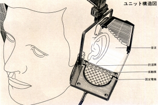

（この時代の製品、SR-Σ（シグマ）の構造図とフォンテックリサーチの上位機種概念図 どちらも頭内定位からの改善を目指していた）
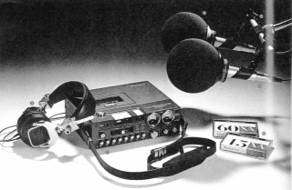
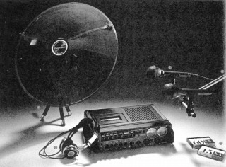
（この当時はヘッドフォンと録音の関係は今よりもはるかに強固でした。70年代で一番充実したヘッドフォン資料は録音系の雑誌です。）
・バイノーラルレコード
人間の耳の位置にマイクをセットし、それをヘッドフォンで聞けば非常に生々しい音が聞けることはずっと以前から知られれていました。第二次世界大戦より前に、すでにアメリカのベル研究所でマイクをセットした人形での実演が行われていました。
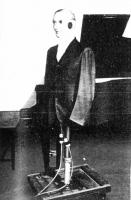
その後1970年代になり、アメリカのハイファイ雑誌「ステレオ・レビュー」がバイノーラルのデモンストレーションレコードを出し、ヘッドフォンメーカーの中からも、同様のレコードを導入するように者が現れました。また日本のコロムビアや東芝、海外ではフィリップスなどがバイノーラルのデモレコードを出してします。中でも一番バイノーラルが流行したのがドイツで、バイノーラルによる定期放送があったそうですし、レコードも多数発売されたそうです。スタックスが1980年代末に何点か扱ったバイノーラル録音のCDもドイツ製でした。また「S-Logic」を売りにするULTRASONE（ウルトラゾーン）がドイツのメーカーであるのも、こうした下地があったからなのかもしれません。
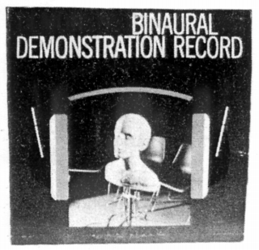
（「ステレオ・レビュー」のデモンストレーションレコード）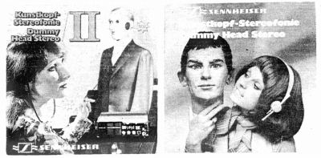
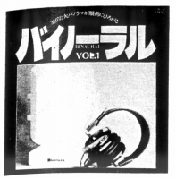
（ゼンハイザーとナポレックスのデモレコード）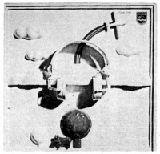
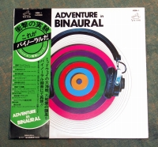
（左 フィリップスのレコード 右 管理人所有のビクター盤レコード）
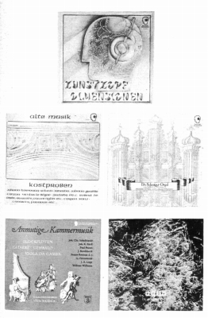
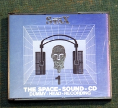
（左 ドイツ製レコード 右 管理人所有のＣＤ）
・ダミーヘッドマイク
そして音源としてバイノーラルが注目されるようになったことで、これまで高額だったダミーヘッドマイクが比較的簡単に入手できるようになったのでした。有名なダミヘッドマイク、ノイマンのKU80は650,000円もする高額商品でしたが、国産で数千円の物から入手できるようになったのがこのころでした。
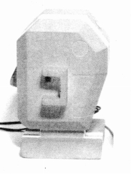
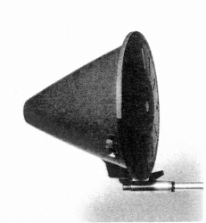
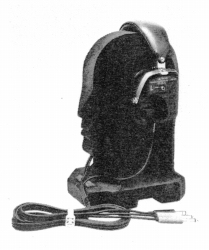
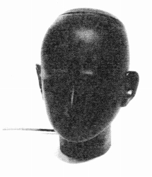
（左から ナポレックスDH-1(\6,800) ソニーDH-5(\9,800) ビクターHM-200(\18,000) テクニクスRP-3280E(\19,800) ）
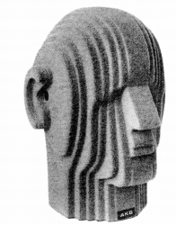
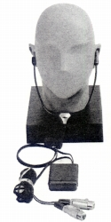
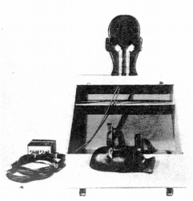
（左から AKG D99C(\66,000) ゼンハイザーMKE-2002(\120,000) ノイマン80(\650,000) ）
このようなバイノーラルレコード、ダミーヘッドマイクの流行があったのが、ヘッドフォン・フェスティバルの開催された時代だったのです。バイノーラルレコード、ダミーヘッドマイクとヘッドフォンを結びつける動きは、イベント主催の岡原氏だけでなく、業界全体的な動きだったのです。
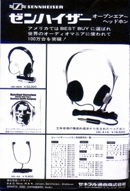
（ヘッドフォン、ダミーヘッド、バイノーラルレコードの３点セットでPRする今はなき某店の広告）